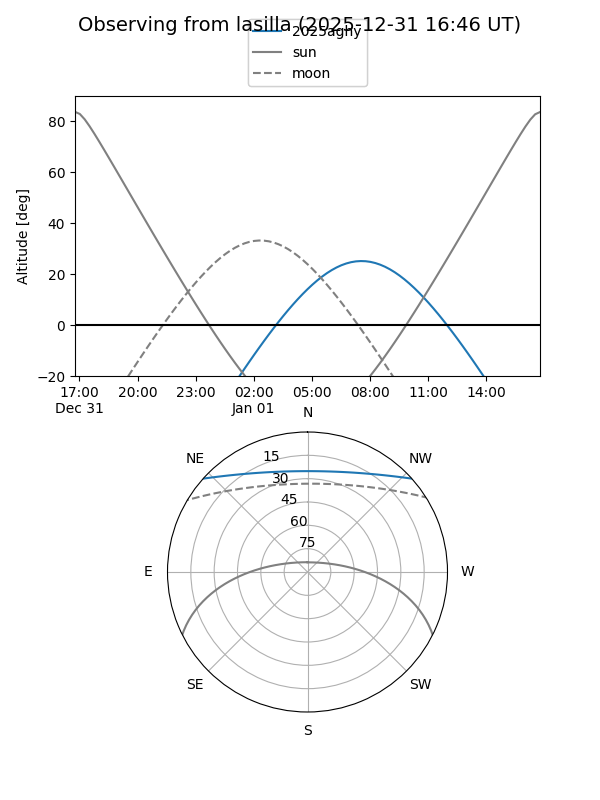
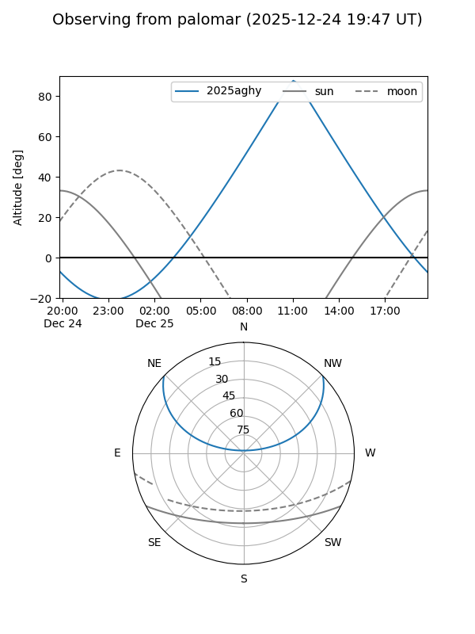
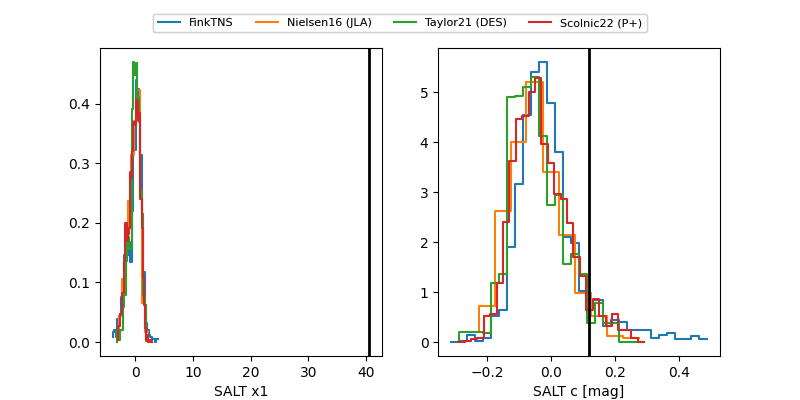

2025aghy
Target 2025aghy at 2025-12-18 11:22
Aliases and brokers:
FINK: fink-portal.org/ZTF25acglarj
Lasair: lasair-ztf.lsst.ac.uk/objects/ZTF25acglarj
ALeRCE: alerce.online/object/ZTF25acglarj
TNS: wis-tns.org/object/2025aghy
YSE: ziggy.ucolick.org/yse/transient_detail/2025aghy
alt names
ZTF25acglarj (ztf,fink_ztf)
2025aghy (tns,yse)
ATLAS25pnq (atlas)
Coordinates:
equatorial (ra, dec) = 143.1885,+35.70250
equatorial (HMS+DMS) = 09:32:45.25,+35:42:08.99
galactic (l, b) = (188.6152,+47.20847)
Photometry
last atlaso=18.76, ztfg=18.48, ztfr=18.54
3 atlaso, 1 ztfg, 2 ztfr detections
Lightcurve

Visibility


Additional plots
